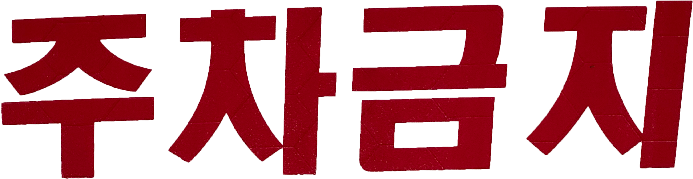
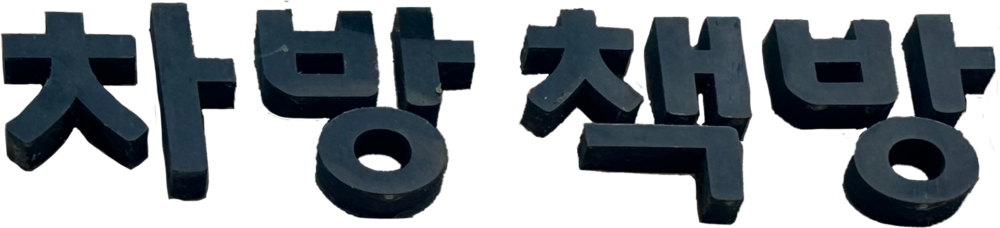
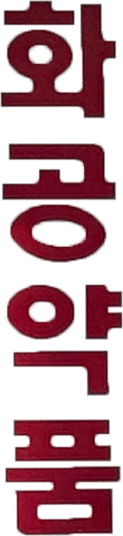
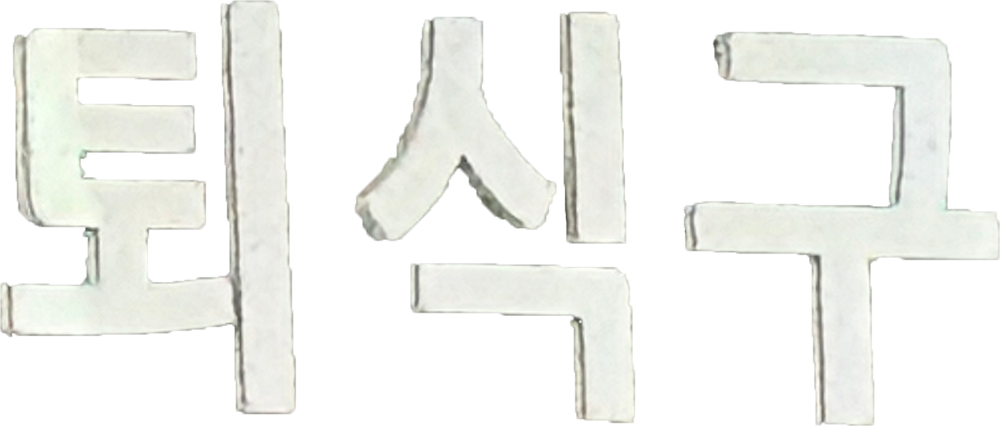
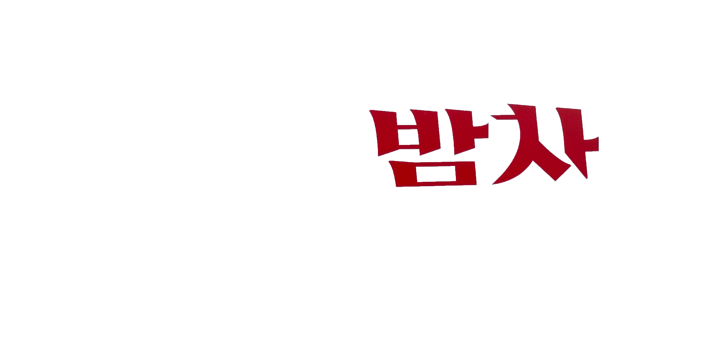

한자어
한국어 어휘의 약 70%가 한자어라는 설이 널리 퍼져 있는데, 이에 대해서 사실이냐 아니냐를 두고 말이 많다. 우선 표준국어대사전을 보면 고유어가 25.28%, 한자어가 57.12%, 한자어+고유어가 8.28%이다. 부표제어는 각각 30.17%, 67.78%, 2.37%이다. 이 통계를 보면, 한국어 어휘의 상당 부분이 한자어임을 알 수 있다. 이는 역사적으로 중국과의 교류가 많았던 한국의 언어적 특성을 반영하는 결과다. 한자어는 학문, 법률, 과학 등 다양한 분야에서 사용되어 왔고, 현대 한국어에서도 여전히 중요한 역할을 하고 있다. 반면, 고유어는 일상생활과 관련된 어휘에서 주로 사용되며, 우리말의 본질을 구성하고 있다. 따라서 한자어가 한국어 어휘의 대부분을 차지하고 있다는 설은 사실이며, 이는 우리 언어의 역사와 문화적 배경을 이해하는 데 중요한 역할을 한다.
주차금지
가장 처음 발견한 단어다. 주차와 금지를 더해 만든 단어로 대표적인 한자어다. 사용된 단어가 비교적 쉬워 한자어라고 바로 인식한다. ‘머무를 주(駐)’, ‘차 차(車)’, ‘금할 금(禁)’, ‘그칠 지(止)’로, 한자를 배운 사람이라면 쉽게 그 뜻을 알 수 있다. 하지만 한자를 배우지 못한 사람이라면 뜻을 알기 어려울 것이다. 그래서 주차금지를 고유어로 바꾸어 본다면 이렇게 바꿀 수 있다. “차 세우기 금지” 차 멈춤 금지”이렇게 바꾼다면 한자를 배우지 못했더라도 비교적 쉽게 읽힌다.
차방책방
마시는 차와 집 안의 방을 더했고, 읽는 책과 방을 더했다. 마찬가지로 한자어로 해당되며, 그 의미는 차 마시면서 책 읽을 수 있는 방이다. 처음 사진을 찍을 때는, 고유어로 생각하고 사진을 찍었다. 하지만 조사해보니 방은 房(방)으로 표기하며, 책은 冊(책)으로 표기하는 한자어이다. 이 간판을 고유어로 바꾸어 본다면 “차마실책읽는방”이다. 다소 길게 느껴질 수 있지만, 자연스러운 고유어 표현을 유지하면서 줄이려면 길어질 수밖에 없다.
화공약품
처음에는 화공이라는 단어가 궁금했다. 검색해 보니 화학공학을 줄여서 화공이라 불렀다. 따라서 화공약품의 뜻은 화학 공업에서 사용하는 다양한 화학 물질을 뜻한다. 주차금지와 마찬가지로 “화학” “공업” “약품” 모두 한자이다.
퇴식구
식당에서 본 단어이다. 퇴식과 구를 더한 것이다. 식당 같은 곳에서 밥을 다 먹은 다음 빈 그릇을 들여보내는 구멍을 말한다. 마찬가지로 한자어이다. 고유어로 바꾸어 본다면 “그릇반납함”이다.
밤차
“밤차”는 한국어의 고유어이다. “밤”은 한국어로 밤이나 밤색을 가리키는 단어이며, “포장마차”는 한국의 문화와 관련이 깊은 용어이다. "포장마차”는 한국어로 이동식 음식점을 가리키는 말로, 한자어로 표기되지 않는다. 그러므로 “밤차” 역시 한국어의 고유어이다. "밤 먹거리 가게”로 바꾸는 것도 가능하다.